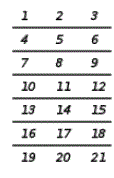

Беседа 3110 от 3877 · Беинса Дуно
Разумни отношения
„Отче наш“
Имате ли зададена тема? „Имаме.“ Четете. (Прочете се темата „Функциите на правите и кривите линии“.)
В дадения случай вас ни най-малко не ви занимават правите и кривите линии. Да допуснем, че един художник седи в природата, занимават го планинските върхове каква реалност имат. Иска да нарисува този връх, иска да нарисува планината. Казва, че той нарисувал планината. Вярно ли е, че той нарисувал планината? Каква вероятност има, че той нарисувал планината? Донякъде виждате, че той нарисувал цялата планина привидно. Сега и във фотографията, ако вземем, има неща, които не може да се фотографират, избягват фотографията. Един художник рисува по един начин, друг – по друг начин. Във всичките картини ще забележите, има едно различие. Ако рисувате сутрин или ако рисувате на обяд, или два часа след обед, или вечерно време, когато залязва слънцето, картините се различават.
Да кажем, вие имате едно състояние, към коя категория то спада? Имате едно състояние средно: нито много скърбите, нито много се радвате, не е и състояние на индиферентност. „Той, казва, е индиферентен. Като че от нищо не се интересува.“ Ти не се интересуваш, пък мислиш за това, от което не се интересуваш. Имаш някой противник – ти не се интересуваш от него, но се интересуваш накъде отива. Ти не се интересуваш от разбойниците, но се интересуваш къде ходят; не те интересува това, което вършат, но се интересуваш да знаеш по кое място се движат разбойниците, защото искаш да пътуваш нататък. Ако те пътуват в посоката, в която и ти се движиш, ще вземеш в съображение да не минаваш в тази местност. Ти не се интересуваш от студа, но ти е топло. Ако речеш да пътуваш, много те интересува студът в дадения случай.

Но в дадения случай тия неща имат отношение. Едно – имате сутрин, две – обед, и три – вечер, залез на слънцето, имате три числа, но не целия процес. Вие какво трябва да вършите сутрин? Сутрин трябва да станете от леглото. На обед, като изгряло слънцето, ти се намериш на полето, търсиш някоя сянка, под някоя круша да седнеш. Гледаш да не те пече толкова слънцето. Кога се търси сянката? Сянка се търси лятно време. Щом човек търси охолен живот, охолен живот има само на обед, под сянката на някое дърво. Щом няма сянка, какъв охолен живот имаш? Онази малката сянка, която се хвърля от дървото, ти причинява една вътрешна приятност, която мъчно може да я предаде един художник. Как бихте могли наистина да предадете приятността на една сянка?
Може да приведа много примери. Представи си, ти си беден студент, беден ученик, баща ви заминал за другия свят, не може да си изкарате работата. По някой път може да кажеш: „Да взема един билет от лотарията.“ Този билет ще спечели един милион лева; една четвъртинка е двеста и петдесет хиляди. Казва: „Да ми се паднат двеста и петдесет хиляди лева.“ Това е под сянката на дървото. Нему му е приятно, като мисли, че може да му се паднат двеста и петдесет хиляди. Изведнъж каква идея ще му дойде? Представете си сега, че се случва, че му се падат тия пари, билетът спечелва. Какво ще направи студентът? Най-първото нещо, този студент, с обикновени идеи, които има, ако е музикант, ще си купи някоя свирка. Зависи от степента на неговото развитие какъв инструмент ще си купи. Може да си купи китара, може да си купи цигулка, може да си вземе кавал, може да си вземе пиано, орган. Вече разполага – двеста и петдесет хиляди има. Но, най-първо, той с инструмента ли ще се хване? Какво ще направи най-първо? Той е гладувал, доста не е ял. Той ще иде и ще има един хубав обед. Как ще го наречете поетически обеда? Няма да бъде скромен, но веднага ще иде в един ресторант, дето масата е добре покрита. Аз вземам един модерен студент, не както са живели преди хиляда или сто години, но със сегашното разбиране.
Ако е един от вас, какво ще правите? Някой казва: „То са заблуждения.“ Някой казва: „Аз мисля сериозно.“ Че какво мисли той сериозно? Пет пари няма, мисли сериозно. Казва: „Аз да имам пари, ще направя едно здание, една болница.“ Друг ще направи едно училище, трети – някоя църква, някой дом в планината. Друг мисли да направи плантация, да я насади с дървета. Мисли, мисли… Често хората изпадат в такива състояния и мислят така.
Има един пример. Един българин нямал кон. Ходи един ден и по пътя намира едно петало. Взема петалото и казва: „Ще дойде и конят.“ Връща се вкъщи и казва: „Ще дойде и конят, жена.“ „Как ще дойде?“ „Петалото вече дойде. Щом петалото дойде, ще дойде и конят. Конят има четири петала, и другите три ще дойдат. Скоро ще дойдат и четирите петала, и конят иде.“ Той бил религиозен човек и казал: „Най-първо, ще идем на хаджилък, като дойде конят.“ Тя казала: „Като се върнем от хаджилък, ще идем на гости при майка ми.“ „Къде, казва, ще караш уморен кон?“ Буквално това не е вярно, но всеки от вас мисли такива работи, като този кон. Не е лошо. „Къде, казва, ще ходиш с уморен кон? Да си почине.“
В дадения случай вече имате една реалност, но тази реалност спада към тази категория: 1 2 3. Като изгрее слънцето, казваш, че ще станеш, но като изгрее слънцето, лежиш под юргана. Казва: „Като ме напече слънцето, ще седна под сянката. Като залезе слънцето, ще се върна вкъщи.“ Слънцето изгрява в ума ти – ти си седнал под крушата отдолу, слънцето залязло. И ти си си на кревата. В ума ти станал цял един процес: слънцето изгряло, ти си под крушата, връщаш се вкъщи, а ти си все под юргана, разсъждаваш. Казваш: „Трябва да е изгряло слънцето сега.“ Ставаш. Като изгрее слънцето, през целия ден няма да се занимаваш, че е изгряло. Може един момент да погледнеш, и после вървиш по пътя, занимават те посторонни работи. От сутринта, като станете, до обед колко часа има? Да вземем най-хубавото време – май, когато вече цъфтят цветята, дърветата, имате най-хубавото разположение, в колко часа изгрява слънцето през май в умерените пояси? Ако е на двайсет и втори март, изгрява в шест часа. Всяка сутрин изгрява една минута по-рано и вечер една минута по-късно залязва. Значи за март имате девет минути и за април трийсет минути. Какво ще бъде вашето състояние? Излизате на изгрев, времето е свежо, няма да бъде толкова топло, слънцето взема да се издига нагоре, дойде до единайсет часа. В кое време ще ви бъде най-приятно? В май слънцето ще изгрява в пет часа, в март в шест часа. Каква е разликата между пет и шест?
Ако вземем числото 1 2 3, общият сбор колко е? Шест, то е резултат на 1 2 3. Да допуснем, трима души са те, трима души, които работят. Общият сбор на тяхната работа ще бъде шест. Какъв е този сбор? Да допуснем, че имате една човешка мисъл, едно човешко чувство и една човешка постъпка. Те представят един сбор на човешки мисли. Представете си, че и 4 5 6 представят сбор на човешки чувства. Колко е той? Шест. 7 8 9 е равно на двайсет и четири, равно е пак на шест. Представете си, че то представя сбор на човешки постъпки. Ако продължавате да събирате цифрите на тези редове числа, сборът е равен все на шест. Имате числата: единица, две е основа, три – киселина. Ще забележите, числата в тази редица изменят своето място.
Запример мнозина от вас имате хубаво разположение, искате да бъдете красиви. Един човек сам може да създаде своята красота. Един художник, който рисува, той не рисува като фотографа. Тя не се фотографира – всяка една идея, тя има една неопределена форма. Някои идеи са смътни. Идеите имат форма, но са смътни. Твоето око не може да схване твоята идея. Някой път години трябва да мислиш върху едно нещо, за да може да си представиш идеята, да се очертае в твоя ум. Туй е в Божествения свят. В първия свят резултата имате:
1 + 2 + 3 = 6.
Имате едно състояние на мисълта, най-красивото състояние на мисълта, в което няма никакво противоречие. Във втория ред от числа:
4 + 5 + 6 = 15.
Тази идея е поставена в своята активност – двама хора, които, събрани, се спогаждат. Петнайсет, то е най-красивото, че се спогаждат. Най-първо, главата мисли, дробовете чувстват, а стомахът е счетоводител. Главата мисли, дробовете разполагат, а стомахът е счетоводител, той прави сметките. Той е касиер. Той, каквото придобие, изпраща го в кръвта, в дробовете. Дробовете, те пречистват тази кръв. Казвате: човек трябва да мисли. Главата трябва да мисли, дробовете трябва да чувстват, а стомахът какво трябва да прави? Трябва да работи. Ако стомахът правилно не работи и ако дробовете правилно не чувстват, и ако главата правилно не мисли, какво състояние ще имаш? Ако главата не мисли, ще остане недоразвита. Ако дробовете не чувстват, животът не може да се съгражда. Ако стомахът не работи, няма нищо да се придобие.
Та казвам, при сегашните условия трябва всички да знаете да се нагласите… Някой път вие се намирате в едно трудно положение, не знаете как да се поставите. Гладен си, няма да дадеш предимство на главата, ще дадеш предимство на стомаха, ще кажеш: „Той трябва да работи“, нищо повече. Неразположен си. На кого ще дадем предимство? На дробовете си. Имаш спънки в живота, на кого ще дадеш предимство? На ума. Той разрешава. Вие някой път не знаете кому каква работа да дадете. Вие сте гладен. Впрегнете ума на работа, да разрешите въпроса за глада. Той ще ви даде материал. Стомахът трябва да дойде да работи, за да задоволи глада. Работата трябва да се свърши. Сега в модерния живот ставате сутрин и обущата ви са кални. Мислите къде да спрете на улицата някой ваксаджия да ви вакса обущата. Туряте крака, този човек започва да намазва обущата, след това вие му правите забележка, после ще му платите за работата. То е едно положение. Ако той не ви вакса обущата, казвате: „Не е добър този ваксаджия, втори път не се спирам на него.“ Втори път се спрете и казвате: „Тия ваксаджии не знаят как да ваксат.“ Ти знаеш как да ваксаш. Щом не харесваш ваксаджиите както ваксат, ваксай си ги ти. Стани сутрин и си ваксай обущата хубаво. Най-първо, ти се опитай да ваксаш. Като опиташ този занаят, ще бъдеш опитен, ще знаеш другите дали добре ваксат.
Сегашните хора, вие, по някой път искате да проповядвате. Че един ваксаджия може да проповядва. Като туриш десния крак да ти вакса обувката, казва: „Както ти ваксаш обущата, така и ти да станеш умен, всичките работи да вървят.“ Сега ваксаджията мисли и нищо не казва. Като туриш левия крак, пак той казва нещо. На левия крак какво трябва да кажеш? Ако на студент ваксаш, кажи: „Дано да си издържиш изпита.“ Като туриш десния крак да ваксаш, какво трябва да кажеш? Вие, ако сте ваксаджия, какво ще кажете, кажете ми? Ако аз си ваксам обущата, на десния крак ще кажа: „Искам добре да мисля днес.“ Като ваксам лявата обувка, ще кажа: „Искам добре да чувствам през целия ден.“ Наваксам ги хубаво, тръгна да реализирам. И тръгна: „Добре да мисля – стъпвам с десния крак. Добре да чувствам – стъпвам с левия крак. Добре да мисля, добре да чувствам, добре да мисля, добре да чувствам…“ – вървя, няма никаква мъчнотия. Отидоха си всичките мъчнотии. Свършвам изпита, всичко зная. Като кажеш, всичко знаеш, какво ще разбираш? Че всичко си изучил. За този ден вече си научил как да мислиш, за този ден си се научил как да чувстваш.
Казвам, ако в съвременното възпитание вие направите едно съединение, се образува сол. Какъв е вкусът на солите? „Солени, горчиви. Сладки няма.“ Горчивата сол е много активна, има повече киселини. Солта е син, бащата е вложил повече. Синът има характера на бащата. Ако е по-солен, мяза на майка си. Ако е сладък, мяза на себе си. Детето, като мяза на баща си, е горчиво, като мяза на майка си, е солено, като мяза на себе си, е сладко.
Сега някой може да ви каже: „Какъв дявол си ти.“ Какъв смисъл давате на дявола? Дяволът не е нещо лошо, дяволът в дадения случай е киселина – дяволит човек е, кисел е. Доброто при сегашните условия е основа. Като се съединят доброто и злото, дават сегашния човек. Човек, като минал през доброто и злото, той е станал сладък вече. Вземете който и да е човек, който не е страдал. Лошият човек какво трябва да се прави? Той казва, докато не са го били: „Бий.“ Но щом го бият, няма да каже: „Бий.“ Той, най-първо, не знае какво нещо е боят. Казва: „Налагайте.“ Той не е опитал удара. Като удрят някого, не може да влезе в положението на онзи, когото бият, че боли от тези удари. Обаче в деня, в който него бият, той вече разбира и когато бият някого, той чувства, че е лошо нещо боят, той става сладък.
Защо някой път казвате, че не искате да страдате? Нямате понятие за живота. Ти опитваш киселините на баща си. Горчивото е сила в себе си, един неорганизиран материал. Имате соленото, то е вече процес на организиране, солта е вече напълно организирана. Когато говорим за сол в света, разбираме нещата добре организирани. Имаш един хубав инструмент, един орган, една цигулка, една китара. Имаш картина, която рисуваш хубаво. Гледаш, ще изучаваш хубавите черти. Да кажем, срещаш един човек, има какво да учиш в него. Има правилни вежди. Зад тия правилни вежди седи една отлична мисъл. Виждаш правилно чело. Зад това чело седи такава разумност. После виждаш един правилен нос. Зад този нос седи една хубава интелигентност, човек, който хубаво наблюдава. Виждаш правилни уста. Зад тия правилните уста седи една хубава проява на чувствата, хубава чувствителност. Ухото представя неговата честност, може да разчиташ на него. Като гледаш ръцете му – онова, което може да свърши, зависи от ръцете. Музикантът трябва да има отлични ръце, за да бъде един добър музикант. За да бъдеш един отличен пешеходец, трябва да имаш отлични крака, подвижни. Като вие вървите, вие не се радвате, че музикално стъпвате. Някой път ходите тромаво, тежко. Кое е хубавото ходене? Ти ще туриш, ще научиш краката да мислят. Ако си неразположен, ти не мислиш. Ако ти си неразположен, ти не мислиш. Тогава ще вземеш да стъпиш на пръстите, после на тази, издутата, част на крака след пръстите, като една възглавничка дето е. С краката свързваме Божествения свят. Ще стъпиш на пръстите си, ще накараш себе си да мислиш. Правилното ходене трябва да започне от първия пръст. Трябва да се научите да ходите. Красота ще дадете на ходенето. После динамика турете. После на ходенето ще предадете благородство, справедливост. Много малко енергия да харчите. След туй ще туриш форма, красота на движението. И после малкият пръст да е резултат в туй ходене. Трябва да туриш мисълта си в краката и веднага тази идея трябва да мине. Стъпиш, отиваш в училище, значи впрягаш ума си на работа. Първо палеца, после впрягаш своето сърце. Деня трябва да прекараш добре. Този ден да бъде красив, да не допущаш никакво неразположение. Каквото и да се случи, да не допущаш неразположение.
Времето се заоблачи, вие допущате една лоша мисъл, ставате като времето. Вие не разбирате времето. Заоблачи се времето. Туй време толкоз ви обича, то се заоблачи, за да не ви изгори слънцето. Заоблачи се небето, че като излезете навън, понеже вие сте свикнали, да не ви изгори. То ви обича и то се заоблачава, само то ви гледа, не иска други да ви гледат. Всички вие правите такива заоблачавания. Когато иска някой да ви обича, ще заоблачи цялото небе, само той да ви гледа, никой друг няма да ви гледа. Питам, от какво зависи заоблачаването? Вие искате да ви обичат. Този, който ви обича, ще заоблачи цялото небе. Той не иска никой друг да ви гледа. Когато влезете в една къща, нали се заоблачавате от слънцето. Всичко е заоблачено, то е малко за да ви предпазят, не се страхувайте. Турят украшения, картини, за да се отвлече вниманието ви. Защото какво има в един таван? Тук отдолу таванът е хубав, но отгоре на тавана какво има? Вие тук го гледате идеален, колко е хубав, беличък. Ако се качите горе на тавана, работата не е такава.
Казвам, не си създавайте една картина, която горе е една, отдолу е друга. Имайте един таван, дето няма нищо, таванът да бъде прозрачен. Може ли да си създадете таван от мислова материя? Някой седи и казва, че няма обуща. Мислѝ си, че имаш хубави обуща, от лъскава кожа направени. Макар че ги нямате, мислѝ си, че имаш. Нямаш ръкавици. Носѝ най-хубавите ръкавици кожени. После гладен си – мислѝ за най-хубавото ядене или ябълки, или круши. Наядеш се, и трябва вече да си починеш. Мислѝ, че си под някоя круша, легнеш си и слънцето отгоре минава, макар че го нямаш. Вече си се изморил от работа, дълъг път си ходил – почини си на такъв хубав креват, заспи си и кажи: „Колко е хубаво всичко туй.“ Ако ти си представиш своята опитност, може да си представиш тъй реално. Казва: „Говори ми, както мислиш.“ Ако говориш, както мислиш, няма да те разбере.Казва: „Аз си въобразявам, че имам пари.“ „Имаш ли ги?“ „Нямам ги.“ „Въобразявам си, че имам обуща.“ „Имаш ли ги?“ „Нямам ги.“ Но има един свят – каквото поискаш, веднага става.
Тогава ще бъдете като в тази приказка, дето един пътник тръгнал да пътува по света. Дошъл до една чешма и бил уморен и извикал: „Ох!“ Веднага излиза един старец и казва: „Какво искаш? Защо ме викаш? Моето име е Ох.“ „Много съм уморен.“ Този старец го бута и този пътник се намира в една много хубава стая, седи вътре и си почива. „Ох!“ „Какво има?“ „Гладен съм.“ Старецът бутва и веднага яденето иде на масата. „Ох!“ „Какво искаш?“ „Искам да си легна.“ Веднага има едно хубаво легло. Каквото поискал този пътник, старецът го правил заради него. Казва: „Идвай всеки ден, щом се намериш в голямо затруднение, идвай при мене и само кажи „ох“, всичко ще се свърши.“ Всички от вас били ли сте при тази чешма? Вие казвате „ох“, защо не стават работите? Защото на друго място сте, не сте при тази чешма, затова не стават. Иди при чешмата, този старец ще излезе, всичко става. Ако на друго място казвате „ох“, не върви. Намясто „ох“ ще казвате. Старецът е само при тази чешма.
В идейния живот ти не вярваш в нещо, имаш една отрицателна вяра и искаш нещата да станат тъй, както ти мислиш. Искай онова, което може да стане. Искай само един хубав обед, той ще дойде. Ти седнеш и мислиш да се осигуриш за цяла седмица, за цял месец. Такива работи не стават.
В Божествения свят всеки момент, най-малкото време, в което нашето съзнание е будно, то е. Ние мислим неправилно. Мислиш, че хората не живеят добре, че не ти върви, че другите хора си уредили живота. Мислиш работи, ни в клин, ни в ръкав не влизат. Мислите ли, че ако едно магаре отиде на гости на една сватба, ще го приемат в приемната стая? Какво ще направят с магарето? Ще кажат: „Таман дойде магарето“, ще му турят самара отгоре и ще го накарат да носи вода. Ща кажат: „Най-първо, нас ни трябва вода за сватбата, защото не може сватба без вода.“ Ако дойде една муха, каква рол ще ѝ дадат? От сватбата ще я изгонят с метла.
Казвам, има разни системи как да се подобри животът. Вие представяйте си, че животът е подобрен, имате всички условия. Мислете добре, чувствайте добре и постъпвайте добре. Какво трябва да правите сутрин, като станете? Какво трябва да прави този човек, който знае добре да пее? Какво трябва да прави този човек, който знае добре да рисува? Какво трябва да прави този човек, който е богат, който има много пари? Сутрин, като стане, какво трябва да прави богатият? Торби със злато го чакат. Какво трябва да прави пощаджията? Той трябва да сортира писмата. Отиваш да дадеш концерт някъде. Най-първо, не се изисква от хората да се обхождат добре с тебе, защото това добро зависи от онова, което ти ще им дадеш в дадения случай.
Казвате: „Да разгледаме живота сериозно.“ Отношението на тия, които ще ме слушат, зависи от онова, което ще им дам. Трябва да им дам най-хубавото в музиката. Искаш да четеш. Ще им дадеш най-хубавото, ще останат всички доволни от казаното. Защото думите на поета, поезията, аз считам като хубави плодове. Всяка дума ти може да я опиташ. Като музика вървят думите на някой поет. Има поети, на които думите са като нагнили плодове.
Вие сега седите и казвате: „Не върви.“ Как ще се справите с туй, което не върви? Към кой свят спада туй, което не се движи? Движението е свързано със слугата. Казва: „Не върви.“ Щом кажеш не върви, ще преведеш – значи слуги няма. Щом няма слуги, тогава ти стани слуга. Казваш: „Няма кой да плаща.“ Стани господар, ти плащай сега. Мислиш, че твоите работи ще останат. Ти можа да бъдеш най-добрият слуга и най-добрият господар в дадения случай. В дадения момент ти си пратен да станеш слуга и да станеш господар. След като си станал слуга и господар, ти имаш приятели. Защото приятелите, които имаш, това са твоите деца. Щом имаш приятели, то са вече деца. Щом си без слуга и без господар, ти деца нямаш. Кое е по-важно сега, слуга да си или господар да си? Който работи ли е по-важен, или който плаща е по-важен в сегашния живот?
Колко мъчно е да ви се говори, понеже вие живеете в един статичен свят, очаквате благата от слугите и от господарите. Вие седите в този свят като зрители и казвате: „В този свят няма кой да ти услужи. В такъв свят няма и кой да ти плати, няма кой да те оцени.“ Ти пееш и никой не те оценява. Кой ще те оцени? Какво разбирате под думите няма кой да те оцени? Представете си, че имате един професор в училището, който има една слабост, недочува. Ти си научил урока хубаво, но говориш урока полекичка. Ти чуваш, но учителят не чува, казва: „По-високо говори.“ Ти мислиш, че говориш високо, пък той не те чува. Ти седиш далеч, трябва да идеш по-близо до професора. Той казва: „Я ела насам, да си кажеш урока.“ Ти идеш там, но се смутиш от професора, мислиш, че нарочно го прави. А той човекът недочува, казва: „Кажи го, по-ясно говори.“
Как мислите, съдбата чува ли хубаво? Доста глуха е. Не че е глуха, но понеже при съдбата не са един, не са двама, то са милиони прошения направени, че като чела, чела, дошло ѝ до гуша – милиони прошения, и всеки иска бързо да стане. Тя казва: „Я кажи, да го чуя.“ Запише на твоя номер. Питам сега, ако петстотин милиона прошения са дадени, в една секунда, кога ще дойде вашият ред? Ако вземе по една секунда да отговори, петстотин милиона секунди колко правят, я направете сметка? Съдбата има един класически образ, тя има една добра страна. Ти като идеш при нея, като те погледна, казва: „Защо си дошъл?“ Ти трябва да вземеш такава поза, която тя не е виждала. Тя, като гледа тия еднообразните хора, тя ги изпъжда, казва: „Хайде да си вървите“, не ги харесва. Тя обича да дойде нещо по-добро. Като идете при съдбата, какво трябва да ѝ кажете? Като дойде един ваш приятел, какво иска да ви каже, когато слугата дойде при господаря?
Имате един нормален господар и един нормален слуга, имате един добър господар и един добър слуга. Какво трябва да каже добрият господар на добрия слуга? Ако слугата е ходил да копае лозето, ще каже: „Господарю, ходих и прекопах лозето.“ Ако ходил да бере грозде, ще каже: „Ходих на лозето, обрахме най-хубавото грозде. Ето кошниците. Всичкото е хубаво, няма лоши зърна.“ Ако слугата е ходил за друга някаква работа, ще каже: „Ходих и свърших работата много добре.“ Отѝдете при някой професор, какво трябва да му кажете? Предал ви някой урок по музика или сте правили нещо, или сте свирили. Веднага ще седнете и ще кажете тази работа, ще дадете изпит. Онзи, който носи грозде, казва: „Най-хубавото грозде набрах.“
Значи всеки един учител е доволен от ученика, когато е дал най-хубавото време, за да научи онова, което му е дал, понеже едновременно професорът, който преподава, и той се ползва. Когато се ползва ученикът, ползва се и учителят; когато се ползва господарят, ползва се и слугата. В Божествения свят еднакво се ползват всички. Може да си милионер, може да си богат, друг може да е сиромах – и сиромахът, и богатият еднакво се ползват от благата. Богатият не може да яде повече от сиромаха и сиромахът не може да яде повече от богатия. Може сиромахът да има храна, която не е пищна. Богатият може да има пищна храна, но той ще вземе от храната толкова, колкото и сиромахът. В Божествения свят всички имат еднакви условия да дават. Всеки си избира храна, която обича.
Ние сега имаме анормален свят. Казвате: „Той иска много да яде.“ Но това е анормално. Той е болен, не яде плътна храна, но някоя чорбица от пиленце взема и не е доволен, не е разположен. Той не е нормален човек, болен е. Ние говорим сега за нормалните хора. Приготвената храна са плодовете, вземам ги от дървото, донасям ги в една паница, измивам ги добре, слагам ги. Щом като не си доволен от тази храна, аз ли съм крив, че не си доволен? Най-хубавите плодове – казваш: „Не ми се ядат.“ Това е едно ядене най-хубаво сготвено: круши, ябълки, сливи, череши. Представете си едно меню от десет вида плодове. Казвам: „Заповядайте, от което обичате.“ Вие вкусите и казвате: „Да е нещо печеничко, пиленце печено.“ Казвам: „Такива пиленца нямам“. Казвате: „Не струва вашият свят.“
Туй е вярно, че вие в ума си внасяте известни идеи, мисли, които мязат на печени кокошки. Вие искате това, от което няма никаква полза. Или искате да бъдете богат. Каква е идеята? Да бъдете богат е хубаво, но какъв богат искате да бъдете? Вие може да бъдете богат в три свята: богат в умствения свят, богат в духовния свят и богат на физическия свят. Хубаво е който и от вас да го направим богат, какво ще направите? Представете си, че в трите свята сте богат, какво ще направите? Ако сте богат, ще си купите автомобил, веднага ще ви уволнят. Ако аз съм богат, най-първо, ще се науча да ходя хубаво, ако аз съм богат, ще се науча да работя хубаво в духовния свят и ще се науча хубаво да мисля в Божествения свят. Ще искам да ходя хубаво, да работя хубаво и да мисля хубаво, тогава съм богат и в трите свята. Туй ще искам. Ако вие искате автомобил, вие не разбирате. Човек, който ходи добре, който работи добре и който мисли добре, всичко на него иде на разположение и съдбата никога не му отказва. Щом искаш автомобил, щом искаш кон, съдбата ще ти откаже.
Имаше един разказ от Михалаки Георгиев. Един шоп, който живял в Цариград двайсет години при един турски паша, затъжил се за шоплука и искал отпуск от пашата, да дойде тук, в Софийско. Пашата му дал четирийсет дена и му казал: „Ако не дойдеш навреме, ще те обеся.“ Един час не трябвало да закъснее. Дошъл той тук, в Софийско, и яли, и пили по шопски, мислел, че рано ще си иде. Обаче още пет дена остават, не може да си иде за пет дена до Цариград. Тръгнал той, и в Пловдивско започнал да се моли Господ да му даде едно конче да се качи. По едно време иде един турски ага, качил се на една кобила и едно конче тича подире. Българинът си мисли, че вече кончето иде, ще се качи. Настигнал го турчинът и казал: „Я вземи кончето да го носиш.“ Българинът сега, наместо да язди кончето, трябва да го носи. Казва си: „Не зная каква е тази съдба. Аз ли не зная как да ѝ кажа, или тя криво ме разбра?“
Разчитай на своите крака. Разчитай на своите ръце. Разчитай на своята глава. Да преведа сега. Разчитай на своите крака – разчитай на своята доброта, то е един капитал. Разчитай на своите ръце – разчитай на своята правда. Разчитай на своята глава, разчитай на своята мисъл. В дадения случай туй е твое право. Твоето добро е сила, твоята правда е сила, твоята мисъл е сила. На тия неща трябва да разчиташ. И никога не роптай. Не че да не роптаеш. В този свят, като мислиш, не роптай. Ако искаш някой път да роптаеш, роптай. Може да е хубаво в дадения момент. Но в този свят, дето всичко е умно направено, трябва да знаеш къде да буташ. Бутни едно копче, което краката разбират. Бутни едно копче, което ръцете разбират. Бутни онова копче, което умът разбира. От главата ще дойде светлина, от ръцете ще дойде топлина, от краката ще дойде сила.
Сега, след като ме слушате, вие започвате по стария начин. Каква песен първо пяхте тази сутрин? Първо пяхте „Всичко в живота е постижимо“. (Учителят имитира нашето пеене.) Когато пееш, вложи мисълта си. Ако вложиш мисълта, как ще пееш? Ти ще мислиш: „Какво ще пея?“ Не, ти ще пееш – и главата, и ръцете, и краката да вземат участие, едно трио ще имате. Десет имате на ръцете, десет – на краката, и седем – на главата. Всичко – двайсет и седем, един камерен оркестър. Тия седемте знаете ли колко са знатни? Знаете ли колко разбират очите, те всичко виждат? Ушите всичко чуват. Носът всичко помирисва, намира го. Устата всичко опитва, професор е, не може да я излъжеш; каквото дадеш, като близне, веднага познава. Носът, и той, като каже, всичко разбира. Всички тия професори – очите, ушите… всичко разбират, тях не може да ги лъжете. Каквото види окото, веднага вижда погрешката. Ухото, като слуша, знае всичките трептения, разбира ги.
Сега вие седите някой път и искате хората от земята да ви обичат. Научете се вие да обичате себе си. Научете се да обичате очите си, защото очите са един резултат на разумни същества, на които милиони години взело, докато направят очите, които са живи. То са повече от милион клетки, милион клетки има в очите, които вземат участие в процеса на зрението. Вие някой път седите и сте недоволни, че нямате хубави дрехи. За в бъдеще ще има такива книжни материали. Дойде един българин от Германия. Понеже германците нямат материали, направили яки хубави от книга. Ще я носиш една седмица. Струва четири лева. Ако дадеш друга, да ни операт и изгладят, пак четири лева ще дадеш. Не само германците сега, в Америка преди трийсет години носеха книжни яки, в Америка студентите ще купят книжни яки една дузина. Една яка ще я носиш една седмица, пък ако я обърнеш и от другата страна, ще я носиш две седмици. Аз съм носил такива книжни яки и съм ги обръщал, тъй щото излиза евтино.
Тук в числото 13 имате една киселина, имате едно противоречие. 14 – имате две положителни числа, и двете са киселини, 14 е закон за жертва. В 14 имате две положителни числа. При 15 законът върви правилно – имате киселина, имате и основа. В четиринайсет дни на месеца какво можете да направите? Представете си, че 14 представлява двама генерали, числото 1 е пълен генерал, другият е лейтенант. Като идете при генерала, какво трябва да кажете? Доста сериозно число. Ти няма да седиш като слуга, да кажеш: „Какво обичате?“ Представете си, че вие сте войник, какво ще кажете, какво ще кажете на тия генерали? Представете си, че числото 15 представя един банкер милионер: 1 е момъкът, 5 е жената, хванали се подръка, вървят. Ти си един от длъжниците, срещаш ги. Какво трябва да кажеш на този банкер? Той излязъл от кантората хубаво облечен, тръгнал с жена си. Какво ще кажеш? Как трябва да постъпиш? При сегашните условия как трябва да постъпиш? Ако знаете как да постъпите, вие ще постигнете целта си много добре на пътя, когато е с неговата възлюблена, отколкото, ако бяхте отишли при него, когато е сам. Понеже са излезли двамата, той е разположен, иска да се покаже, казва: „Колко искаш?“ Веднага дава. Ако знаеш как да постъпиш, всичко ще се уреди много добре. Ако не знаеш, ще намериш банкерина сам, като е без своята възлюбена. Те са като габровци, бръсне яйцето.
Всичките американци са все габровци. Ще ви кажа защо. В Америка всичките яйца са сортирани по големина на сортове. Като идеш някъде, яйцата са прекарани през известни дупки, по големина са разпределени и на всяко яйце е писано от колко дена е снесено, дали е преди един, два, три, или преди една седмица. Наредени са. Под думите габровците бръснат яйцето разбираме разумно направено нещо. По-дребните яйца са по-евтини, по-едрите и по-пресните са по-скъпи. В Америка най-хубавите яйца дванайсет ще ги вземеш за един долар. Един долар колко е? Осемдесет и два лева. По колко се пада яйцето? По седем лева.
Считайте, че живеете в един разумен свят. Туй е вярното. Вие мислите, че светът не е разумен. Мравите мислят, че от тях по-разумни няма. Мравите знаят ли нещо за човешките здания, за концертите, за забавленията, за разните инструменти? Нещата за мравите, и да се изнесат, са непонятни. И църквите, и религиите за мравите са непонятни. Някой казва: „Какво мислиш за живота?“ Ако ти, като мравя мислиш, гледаш на работите, само от един мравуняк да вземеш какавидите и да ги пренесеш в друг, какво ще разбираш? Мравите са и доста войнствени. Сега вие мислите по някой път: да работим, но няма отглас. По радиото трябва да изучавате законите. В духовния свят има радио. Трябва да настаниш своето радио. Ти се молиш на Бога, но ти не си предал мисълта си. Ти трябва да предадеш мисълта си, има известни вълни – има къси вълни, има и дълги вълни. По късите вълни се предава по един начин, по средните вълни една мисъл не може да се предаде така лесно. Как искаш, с къси вълни, със средни вълни или с дълги вълни?
Казваш: „Не върви, не ме слушат.“ Хубаво, ако един певец излезе на сцената и не го слушат, кой е крив, публиката или той е крив? Той е крив, нищо повече. Ние вече имаме оценка на миналото, носим го ние. Ако изучавате английски или френски, ще го изучавате, тъй както е. Английският език не е достигнал още съвършенство, френският не е достигнал още съвършенство. Всичките езици не са достигнали съвършенство. Някои от класическите езици са остарели. Ако вземете еврейския език, има нещо много първично, няма нужната мекота. Ако четете Евангелието, е написано на няколко стари езици, но формата не е еднаква. На гръцки език има най-хубава изящна форма. Като го четеш на еврейски, има един смисъл. Като го четеш на гръцки, има друг смисъл; има думи и мисли, изящна форма имат, но и гръцкият език не е достигнал своята изящност.
Вие се молете, за да бъде речта ви изящна. Всяка реч трябва да бъде добра, трябва да бъде справедлива и трябва да бъде разумна – три качества трябва да има. Доброта, това значи основа. Справедливостта е процес на граденето. Мисълта показва, че всяка работа, като започнеш, трябва да бъде добре завършена. След като завършите една работа, тя ще бъде основа за друга. Мислите ли, че онзи поет, който е написал едно стихотворение, че е свършил работата? Той едва е започнал, то е встъпление на онази поезия. Поетически как ще опишеш една майка, която обича своето дете? Да опишеш вярно, да опишеш самата реалност, както е. Как ще опишете в света господари и слуги? Слугата добре свършил работата – господарят добре плаща. Или как ще опишеш един певец, който пее добре? Певецът пее добре, когато разбира. Музика има навсякъде в живота. Ти вървиш по пътя, направиш едно добро на един човек и целия ден се радваш в сърцето си. Вестниците нищо не са писали, и това те радва. Друг път вестниците писали, и ти не се радваш. Направиш едно добро и целия ден имаш едно хубаво разположение, като че си добил някакво богатство.
Казвам, няма по-хубаво нещо в света, човек да знае да мисли добре. Светът представя безброй възможности. В този свят, в който сега живеете, има богатства, толкова богатства, че вие нито сте ги виждали. Как ще ги видите? Вие трябва да развиете един усет в себе си. Има музикални вълни във въздуха, в природата, които не може да схванете. Ако змията влезе при човеците, как ще я посрещнат сегашните хора? Като влезе змията, ще ѝ смажат главата. Ако влезе магарето при хората, ще го турят на работа. Ако влезе едно разумно дете, какво ще бъде отношението? Змията ще каже: „Защо така постъпват с мене?“ Магарето ще каже: „Защо с мене така постъпват?“ Детето, и то ще попита къде седи причината. Змията е крива, че ходи без крака. Магарето е криво, че ходи на четири крака. Детето е право, понеже ходи на два крака. Змията е виновата, понеже всеки, който отива без крака, не го приемат. Няма справедливост. Глава има отлична, но глава без крака е опасна. Една глава, която ходи на четири крака и само реве, и тя не е намясто. Глава, която се носи на два крака, тя мисли. То е философията. Змията доброта и справедливост няма – глава без доброта и справедливост е лоша глава. Глава, която се носи на четири крака, тя не мисли. Глава, която мисли, е глава, която се носи на два крака.
Значи доброто е основа, справедливостта е градеж и главата тогава мисли. То е едно естествено положение. Понеже човек е на двата крака, ръцете работят, има една хубава поза. Човек, за да бъде изправен на краката, трябва да има най-хубавата поза на физическото поле, има възможности да свърши каквато и да е работа. Магарето има малки възможности, змията – съвсем малки, тя само някоя пакост може да направи. Магарето само реве, а човек мисли. Аз считам, че човек, който ходи на два крака, има най-добрите възможности. Тези възможности седят в неговата доброта, справедливост и в неговата мисъл.
Та казвам сега, радвайте се, че не сте на мястото на змията, радвайте се, че не сте на мястото на магарето. Радвайте се, че можете да мислите. Кое остана от всичкото говорено? За шестнайсет години съдбата би отговорила, ако ѝ трябваше по една секунда да отговори, на петстотин милиона молби. Шестнайсет години – той вече е свободен от дявола. Шестнайсетата години е крайният предел, дето можеш да бъдеш роб някъде. След това или се освобождаваш да живееш свободно, или заминаваш за другия свят. Повече от шестнайсет години не можеш да бъдеш роб. Считайте, че живеете в един свят разумен, дето зад всичките противоречия, които срещате в живота, зад всичките противоречия на мислите, зад всичките противоречия на чувствата и постъпките, седи нещо разумно в света. Туй трябва да бъде единствената мисъл.
Тайна молитва.
Да ви дам едно правило. Пълен си. Искаш да се освободиш от своята пълнота. Какво ти трябва? Понеже пълният има повече мазнини в тялото си, да стопи мазнината и да си направи свещи. Сух си – трябва ти повече вода, повече живот ти трябва. Несръчен си – повече сила ти трябва. Съедини светлината и топлината в едно. Като ги съединиш в права пропорция, ти ще образуваш сила, светлина и топлина. Съединени на едно място, образуват човешката динамическа сила. Затова, който е слаб, да съедини своите мисли със своите чувствания, и той ще придобие силата. Или постави мисълта си на работа, постави чувствата си на работа, защото силата е резултат на поставените мисли и на поставените чувства.
Някой от вас казва, че има миризливо сърце. Много хубаво, че имате миризливо сърце. Докато не мирише онзи цвят, не може да завърже. Не трябва да гният нещата, но трябва да цъфтят.
Казвам, вярвайте в едно – че зад всичките противоречия в живота седи нещо разумно, към което може да се обърнете, докато дойде да разберете защо ви се случват някои работи.
Шеста лекция на Младежкия окултен клас
17 ноември 1939 г., петък, 5 ч сутринта
София – Изгрев